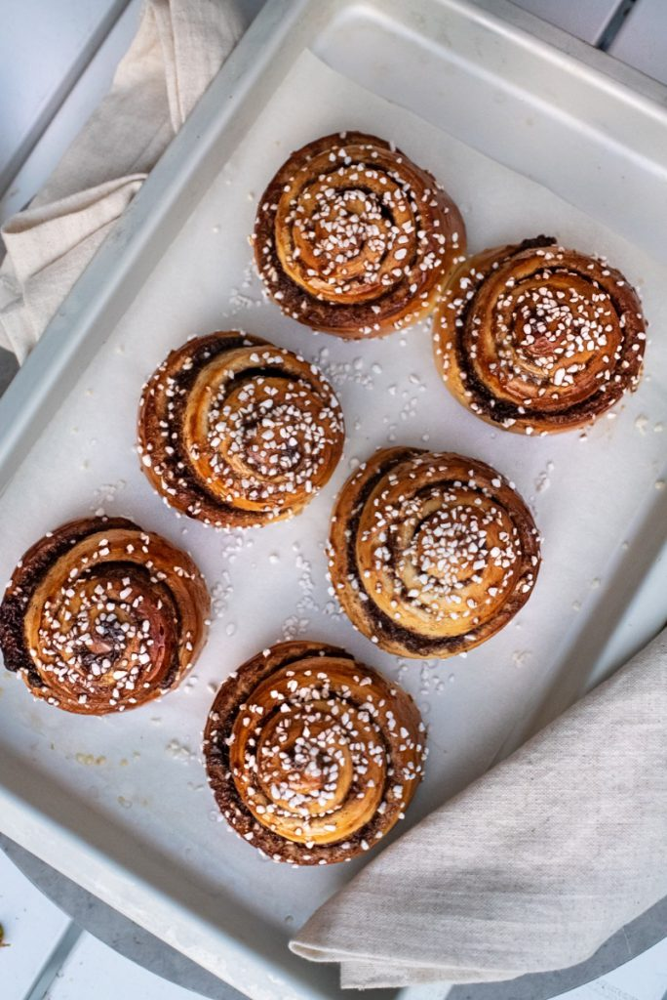
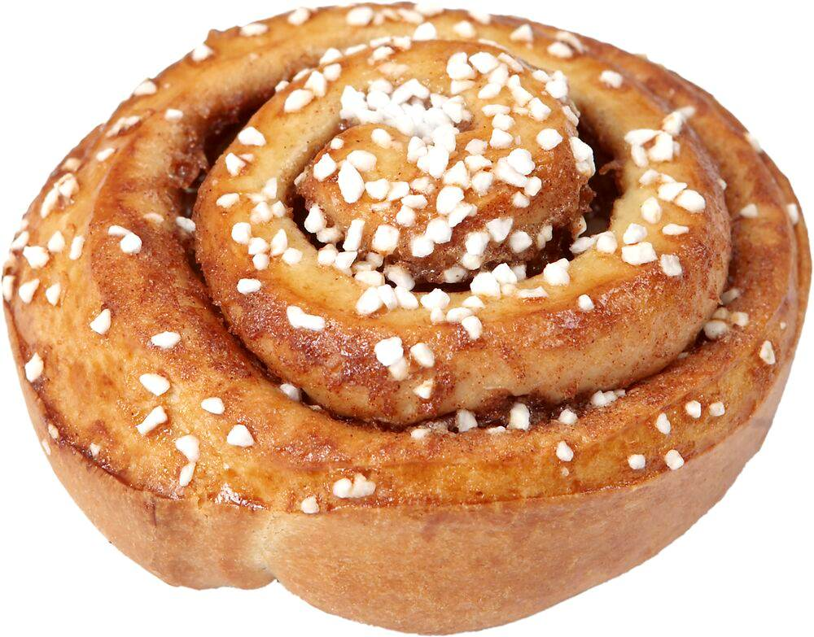

Ingredienser
- 50 g jäst
- 100 g smör
- 5 dl mjölk
- 1 dl socker
- 1/2 tsk salt
- ca 1,5 liter vetemjöl
- 100 g smör (till fyllningen)
- 1 dl socker (till fyllningen)
- 2 msk kanel (till fyllningen)
- 1 ägg (till pensling)
- Pärlsocker (till garnering)
Instruktioner
- Smula jästen i en bunke.
- Smält smöret och tillsätt mjölken, värm till fingervarmt (37 grader).
- Häll smör- och mjölkblandningen över jästen och rör om tills jästen lösts upp.
- Tillsätt socker, salt och det mesta av mjölet. Arbeta degen tills den är smidig och släpper från kanterna.
- Låt degen jäsa under bakduk i cirka 30 minuter.
- Stjälp upp degen på mjölat bakbord och knåda den lätt.
- Dela degen i två delar och kavla ut varje del till en rektangel.
- Bred smör över degrektanglarna och strö över socker och kanel.
- Rulla ihop varje rektangel från långsidan och skär rullarna i cirka 2 cm tjocka skivor.
- Placera bullarna på bakplåtspapper och låt jäsa under bakduk i cirka 30 minuter.
- Pensla bullarna med uppvispat ägg och strö över pärlsocker.
- Grädda bullarna i 225 grader i cirka 8-10 minuter, eller tills de är gyllenbruna.
